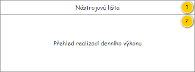
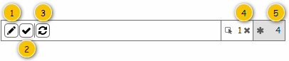
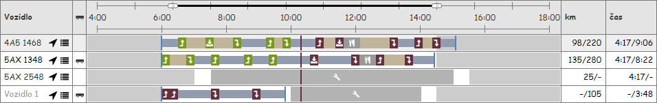
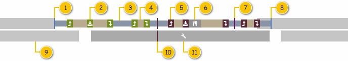

Stručný popis
Přehled realizace denních výkonů slouží k zobrazení Realizací denního výkonu, které odpovídají nastavení provedenému v nástrojové liště. Pokud je datum realizace nastaveno na dnešní datum, je zobrazován aktuální stav realizace odpovídajících Denních výkonů. V případě, kdy je datum realizace nastaveno do minulosti, jsou zobrazena historická data. Datum realizace v budoucnosti pak není možné nastavit.
Uživatelské rozhraní
Barvy a ikony jsou společné pro celou obrazovku monitoringu realizace Denních výkonů, proto jsou uvedeny společně na jednom místě – viz Použité barvy a ikony. Pokud je v dalším textu odkazováno na barvy či ikony, jedná se o hesla obsažená v tomto přehledu.
Rozložení
Drátový diagram

Přehled UI komponent
| Callout | Skupina |
|---|---|
| 1 | Nástrojová lišta |
| 2 | Přehled realizací denního výkonu |
Nástrojová lišta
Drátový diagram

Poznámka: Drátový diagram je pouze ilustrativní.
Přehled UI komponent
| Pořadí | Komponenta | Nadpis | Typ komponenty | Příklad hodnoty | Hodnota | Výchozí hodnota | Formát | Bublinková nápověda | Zpřístupněná | Viditelná | Chování | Validace | Poznámka |
|---|---|---|---|---|---|---|---|---|---|---|---|---|---|
| 1 | Filtr realizací denních výkonů | – | ComboBox
| 4A5 1468 | Entita Denní výkon – atribut Denní výkon entity Realizace denního výkonu. Dostupné Realizace denního výkonu odpovídají těm v Přehledu realizací denního výkonu (včetně jejich pořadí). K dispozici je i možnost Nevybráno, ta je v nabídce zobrazena jako v pořadí první (jedná se pak o výchozí položku nabídky). | Nevybráno | Pokud není hodnota k dispozici a zároveň je k Dennímu výkonu přiřazeno Vozidlo (atribut Vozidlo), je zobrazen zástupný text: licensePlatePlaceholderText, viz Konfigurační hodnoty. Může také nastat případ, kdy k obsaženému Dennímu výkonu není přiřazeno žádné Vozidlo. V takovém případě je chování následující – viz Zástupný text vozidla. | – | Vždy | Vždy | Pokud je zvolena možnost Nevybráno, není v Přehledu realizací denního výkonu dle tohoto kritéria filtrováno. Jinak je zvolena jedna z dostupných Realizací denního výkonu – v takovém případě je v Přehledu realizací denního výkonu k dispozici pouze odpovídající Realizace denního výkonu. Dochází pak i k aktualizaci dostupných informací v připojené mapě (viz Zobrazené záznamy v mapě). Při změně vstupních parametrů této obrazovky (viz 300UI01: Nástrojová lišta) dochází k nastavení výchozí hodnoty v tomto ovládacím prvku. | – | Omezení zobrazených záznamů se vztahuje i na připojenou mapu (viz ). |
| 2 | Filtr naplánovaných denních výkonů | – | ToggleButton
| – | – | – | – | Jen naplánované denní výkony | Vždy | Vždy | Pokud je tlačítko stisknuto, jsou k dispozici pouze takové Realizace denního výkonu, které obsahují neprázdný Denní výkon (viz Filtr prázdných denních výkonů). Jinak tlačítko stisknuto není (výchozí stav), k dispozici jsou pak všechny Realizace denního výkonu. | – | Ve výchozím stavu není tlačítko stisknuto (filtr není nastaven). |
| 3 | Přeplánování denního výkonu | – | Button
| – | – | – | – | Přeplánování denního výkonu | Vždy | Je označena alespoň jedna Realizace denního výkonu. Denní výkon obsažený v poslední označené Realizaci denního výkonu je v jednom z uvedených stavů (atribut Stav entity Denní výkon – atribut Denní výkon entity Realizace denního výkonu):
Denní výkon obsažený v poslední označené Realizaci denního výkonu obsahuje alespoň jednu Položku denního výkonu (atribut Položky denního výkonu entity Denní výkon – atribut Denní výkon entity Realizace denního výkonu). | Spustí 200UC02: Upravit denní výkon, na vstup UC jsou předány následující hodnoty:
| – | Pokud je vybrána více než jedna Realizace denního výkonu, je na vstup UC předána ta, která byla označena jako poslední. |
| 4 | Potvrdit realizaci denního výkonu | – | Button
| – | – | – | – | Potvrdit realizaci denního výkonu | Vždy | Je označena alespoň jedna Realizace denního výkonu. Denní výkon obsažený v poslední označené Realizaci denního výkonu je v jednom z uvedených stavů (atribut Stav entity Denní výkon – atribut Denní výkon entity Realizace denního výkonu):
| Spustí 400UC01: Zobrazit obrazovku kontroly realizace denního výkonu, na vstup UC jsou předány následující hodnoty:
| – | Pokud je vybrána více než jedna Realizace denního výkonu, je na vstup UC předána ta, která byla označena jako poslední. |
| 5 | Označení všech realizací denního výkonu | – | Button
| – | – | – | – | Označení všech realizací denního výkonu | Vždy | Vždy | Označí všechny Realizace denního výkonu v přehledu. | – | – |
| 6 | Zobrazit v mapě pouze označené | – | ToggleButton
| – | Počet právě označených položek v přehledu realizací denního výkonu. | Ve výchozím stavu není tlačítko stisknuto. | Zobrazit v mapě pouze označené | Vždy | Vždy | Pokud je tlačítko již stisknuto, není provedena žádná akce. Jinak dojde ke stisknutí tlačítka a jsou provedeny následující akce:
Dochází pak i k aktualizaci dostupných informací v připojené mapě (viz Zobrazené záznamy v mapě). V rámci ovládacího prvku je dále možné zrušit právě označené položky v přehledu – k tomu slouží tlačítko (ikona: ra-cross), viz drátový diagram. po stisknutí tohoto tlačítka tedy není označena žádná položka přehledu. | – | Pokud je zvolena možnost Zobrazit v mapě pouze označené (tlačítko je stisknuto) a zároveň není označena žádná Realizace denního výkonu, jsou v mapě zobrazeny všechny v přehledu obsažené Realizace denního výkonu (chování vychází z FLWW2). | |
| 7 | Zobrazit v mapě vše | – | ToggleButton
| – | Počet všech načtených položek v přehledu realizací denního výkonu. | Ve výchozím stavu je tlačítko stisknuto. | Zobrazit v mapě vše | Vždy | Vždy | Pokud je tlačítko již stisknuto, není provedena žádná akce.
Dochází pak i k aktualizaci dostupných informací v připojené mapě (viz Zobrazené záznamy v mapě). | – | – |
Chování
Zobrazené záznamy v mapě
V některých případech dochází k omezení dostupných informaci zobrazených v připojené mapě (viz ). V takovém případě je provedena jejich aktualizace – je spuštěn , na vstup UC jsou předány následující hodnoty:
- Zobrazit pouze označené: hodnota je získána dle aktuálního nastavení nástrojové lišty (komponenty 5, 6):
- Pokud je stisknuto tlačítko pro zobrazení pouze označených záznamů (komponenta 5): TRUE.
- Jinak je stisknuto tlačítko pro zobrazení všech záznamů (komponenta 6): FALSE.
- Realizace denního výkonu: hodnota je získána dle aktuálně nastavené Realizace denního výkonu v rámci nástrojové lišty (komponenta 1).
- Pokud je nastavena možnost Nevybráno: NULL.
- Jinak je zvolena jedna z dostupných Realizací denního výkonu: odpovídající Realizace denního výkonu.
Filtr prázdných denních výkonů
Filtr umožňuje skrytí takových Realizací denního výkonu, které obsahují prázdný Denní výkon…
- Jedná se pak o Denní výkon, který neobsahuje žádnou Položku denního výkonu (mimo Start a Cíl).
- Existence odpovídajících Intervalů omezení denního výkonu pak není při vyhodnocení brána v potaz.
Vyhodnocení pak probíhá následovně – pro všechny dostupné Realizace denního výkonu…
- Systém získá odpovídající Denní výkon (hodnota atributu Denní výkon právě zkoumané Realizace denního výkonu).
- Systém získá odpovídající položky získaného Denního výkonu (viz krok 1) – hledá takové Položky denního výkonu, které splňují všechny dále uvedené podmínky zároveň:
- Hodnota atributu Denní výkon odpovídá získanému Dennímu výkonu.
- Daná Položka denního výkonu není odkazována z atributu Počáteční položka denního výkonu získaného Denního výkonu (nejedná se o Start).
- Daná Položka denního výkonu není odkazována z atributu Koncová položka denního výkonu získaného Denního výkonu (nejedná se o Cíl).
- Systém vyhodnotí získané Položky denního výkonu (viz krok 2):
- Pokud byl nalezen alespoň jeden záznam – nejedná se o prázdný Denní výkon (odpovídající Realizací denního výkonu je zobrazena).
- Jinak nebyl nalezen ani jeden záznam – jedná se tedy o prázdný Denní výkon (odpovídající Realizací denního výkonu není zobrazena).
Přehled realizací denního výkonu
Přehled je řazen následovně:
- Nejprve jsou uvedeny Realizace denního výkonu s přiřazeným vozidlem. Ty jsou řazeny abecedně dle SPZ tohoto Vozidla (atribut RZ entity Vozidlo – atribut Vozidlo entity Denní výkon – atribut Denní výkon entity Realizace denního výkonu).
- Dále jsou uvedeny Realizace denního výkonu, u kterých není přiřazeno vozidlo. Ty jsou řazeny dle ID konkrétní Realizace denního výkonu.
V rámci samotného přehledu je možné snadno označit více řádků zároveň – viz Označení více řádků.
Pokud je jeden nebo více řádků v přehledu označeno, dojde ke zvýraznění odpovídajících prvků jednotlivých vrstev i v rámci mapy – viz .
Mapa na označené řádky centruje.
Drátový diagram

Přehled UI komponent
| Sloupec | Nadpis | Typ komponenty | Příklad hodnoty | Hodnota | Výchozí hodnota | Formát | Možnosti sloupce | Zpřístupněná | Viditelná | Chování | Validace | Poznámka |
|---|---|---|---|---|---|---|---|---|---|---|---|---|
| Vozidlo | Vozidlo | TextBox | 4A5 1468 | Entita Denní výkon – atribut Denní výkon entity Realizace denního výkonu. | – | Pokud není hodnota k dispozici a zároveň je k Dennímu výkonu přiřazeno Vozidlo (atribut Vozidlo), je zobrazen zástupný text: licensePlatePlaceholderText, viz Konfigurační hodnoty. Může také nastat případ, kdy k obsaženému Dennímu výkonu není přiřazeno žádné Vozidlo. V takovém případě je chování následující – viz Zástupný text vozidla. | – | Nikdy | Vždy | Detail realizace denního výkonu | – | – |
| Použití přívěsu | Ikona: ra-trailer. | Ikona | TRUE | Entita Denní výkon – atribut Denní výkon entity Realizace denního výkonu. | – |
| – | Nikdy | Vždy | Zobrazení přívěsu | – | – |
| Diagram | Časová osa | Diagram | – | – | – | – | – | Nikdy | Vždy | – | – | – |
| Vzdálenost | km | TextBox | 98 / 220 | Entita Realizace denního výkonu. | – |
Pokud není konkrétní hodnota k dispozici, je místo ní zobrazen zástupný text: „–“ (ALT+0150). | – | Nikdy | Vždy | Po najetí na jakoukoliv buňku tohoto sloupce (hlavička i hodnota) je zobrazen ToolTip s následujícím textem: Skutečná/předpokládaná vzdálenost. | – | – |
| Čas | Čas | TextBox | 4:17 / 9:06 | Entita Realizace denního výkonu. | – |
Pokud není konkrétní hodnota k dispozici, je místo ní zobrazen zástupný text: „–“ (ALT+0150). | – | Nikdy | Vždy | Po najetí na jakoukoliv buňku tohoto sloupce (hlavička i hodnota) je zobrazen ToolTip s následujícím textem: Skutečná/předpokládaná doba trvání denního výkonu. | – | – |
Chování
Centrování na označené řádky
Po označení řádku mapa vycentruje na odpovídající Realizaci denního výkonu, přičemž:
- Centruje pouze na data, která jsou (s ohledem na vykreslené vrstvy) právě zobrazována.
- Pokud je současně označeno více řádků, centruje mapa na data odpovídající všem vybraným řádkům.
- Centrování je deaktivováno, pokud uživatel zapnul funkci Neposouvat mapu.
Označení více řádků
V rámci přehledu je nutné uživateli umožnit označení více řádků zároveň. Režim pro označení řádků je pak spuštěn stisknutím klávesy Ctrl. K ukončení režimu dojde ve chvíli, kdy je klávesa uvolněna. Chování je pak následující:
- Je stisknuta klávesa Ctrl: Uživatel kliká na řádky přehledu – pokud klikne na označení řádek, jeho označení se zruší. Pokud klikne na neoznačený řádek, provede se jeho označení. Toto chování je respektováno do doby, než uživatel uvolní klávesu Ctrl. Po jejím uvolnění zůstane zachována množina uživatelem zvolených řádků.
- Není stisknuta klávesa Ctrl: Jakmile uživatel klikne na řádek přehledu, dojde ke zrušení označení všech právě označených řádků. Následně je označen právě ten řádek, na který uživatel klikl.
Zástupný text vozidla
Může nastat situace, kdy k Dennímu výkonu není přiřazeno žádné Vozidlo. V takovém případě je potřeba zobrazit zástupný text, který nahrazuje identifikaci chybějícího Vozidla.
Zástupný text není k Dennímu výkonu ukládán. Je generován pro aktuálně zobrazená data. Formát výstupu je pak následující Vozidlo
Pořadové číslo je pak získáno tak, že se postupně prochází Denní výkony a pořadové číslo je postupně inkrementováno. Řada pak začíná číslem 1.
Pokud dojde k přiřazení Vozidla k Dennímu výkonu, případně je přidán nový Denní výkon (a tím i Realizace denního výkonu tohoto přehledu), je pořadové číslo opětovně přiřazeno dle aktuálního pořadí v přehledu – zástupný text není u Denního výkonu uchován.
Detail realizace denního výkonu
V rámci jednotlivých buněk sloupce Vozidlo jsou k dispozici pole, která umožňují zobrazení detailních informací týkajících se odpovídající Realizace denního výkonu. Tato pole jsou reprezentována ikonou, jsou zarovnána vpravo a jejich pořadí koresponduje s tím v dále uvedené tabulce. Po najetí myší na pole je pak zobrazen ToolTip s odpovídajícími informacemi.
Poznámka: ToolTipy, které jsou zobrazovány v rámci uvedených panelů, mohou obsahovat vlastní ToolTipy – ty však z logiky věci nemusí být zobrazovány.
Detail | Ikona | Popis | Zobrazené informace |
|---|---|---|---|
| Detail realizace denního výkonu | ra-map-fob | Zobrazuje souhrnné informace o Realizaci denního výkonu. | 300UI01: Detail realizace denního výkonu, na vstup jsou předány následující informace:
|
| Detail realizace trasy denního výkonu | ra-list | Zobrazuje informace o realizaci Lokací objednané služby, které jsou v Realizaci denního výkonu obsaženy. | 300UI01: Průběh realizace, na vstup jsou předány následující informace:
|
Zobrazení přívěsu
Pokud je u Denního výkonu, který je přiřazen u konkrétní Realizace denního výkonu, použit Přívěs, zobrazuje se v tabulce ikona – viz popis v přehledu UI komponent. Po najetí myší na tuto ikonu se zobrazí ToolTip s výčtem Přívěsů, které jsou k odpovídajícími Dennímu výkonu přiřazeny. Kolekce přiřazených Přívěsů je pak dostupná pod atributem Použité přívěsy entity Denní výkon – atribut Denní výkon entity Realizace denního výkonu. Obsah zobrazeného ToolTipu se liší dle počtu Přívěsů v získané kolekci – viz tabulka.
| Počet přívěsů | Formát | Poznámka |
|---|---|---|
| Žádný | – | ToolTip není zobrazen vůbec. |
| Právě jeden | – | |
| Více než jedem | – |
Poznámka: Ve sloupci formát jsou uvedeny atributy entity Přívěs.
Diagram
Diagram slouží k zobrazení stavu realizace Denního výkonu. Pro dnešní den zobrazuje aktuální situaci, pro datum v minulosti pak historická data.
Nejdříve je uveden jednoduchý náhled na diagram, následně jsou jednotlivé části detailně popsány.
Poznámka: V tuto chvíli nebudou umožněny žádné interakce v rámci diagramu.
Drátová diagram

Přehled UI komponent
Interakce
V rámci diagramu Realizace denního výkonu jsou dostupné pouze základní interakce – jedná se o ztmavení prvku ve chvíli, kdy na něj uživatel najede myší. Následně je zobrazen ToolTip s podrobnými informacemi o tomto prvku. Uvedené interakce jsou pak dostupné pouze pro některé prvky diagramu – viz dále uvedená tabulka.
Poznámka: Pokud není pro prvek diagramu uveden formát textu pro ToolTip, či není prvek obsažen vůbec, není pro tento prvek ToolTip zobrazován. Takový prvek není ani zvýrazněn po najetí myši.
Zvýraznění prvku je pak realizováno jeho ztmavením o 20 % oproti původní barvě.
| Prvek | Upřesnění | Formát textu pro ToolTip | Příklad textu pro ToolTip | Poznámka |
|---|---|---|---|---|
| Interval omezení denního výkonu | Atribut Typ omezení nabývá hodnoty Mimo provozní dobu. | Provozní doba: Jedná se o atributy entity Interval omezení denního výkonu. První interval je takový Interval omezení denního výkonutypu Mimo provozní dobu, u kterého atribut Čas omezení od nabývá hodnoty 0:00. Druhý interval je takový Interval omezení denního výkonutypu Mimo provozní dobu, u kterého atribut Čas omezení do nabývá hodnoty 23:59. | Provozní doba: 6:00-14:30 | Jsou zároveň zvýrazněny všechny Intervaly omezení denního výkonu tohoto typu, které jsou obsaženy v odpovídajícím Denním výkonu. V rámci odpovídajícího Denního výkonu jsou obsaženy vždy právě dva Intervaly omezení denního výkonu. |
| Atribut Typ omezení nabývá hodnoty Alokace na servis. | Alokace na servis: <Čas omezení od>-<Čas omezení do> Jedná se o atributy entity Interval omezení denního výkonu. | Alokace na servis: 10:00-12:00 | – | |
| Lokace objednané služby
| Atribut Typ lokace nabývá hodnoty Místo realizace. | Formát výstupu pro ToolTip lokace | Vozidlo: 5AX 2514 Akce: Umístit Typ lokace: Místo realizace Adresa: Opatovská 1735, Trenčín Časové okno: 6:00-12:00 Zákazník: M – SILNICE, a.s. Poznámka: Výjimečně změněna adresa: Způsob odbavení: Potvrzena realizace | – |
| Atribut Typ lokace nabývá hodnoty Likvidační místo či Výchozí likvidační místo. | Formát výstupu pro ToolTip lokace | Vozidlo: 5AX 2514 Akce: Vyprázdnit Typ lokace: Likvidační místo Adresa: Opatovská 1735, Trenčín Způsob odbavení: Potvrzena realizace | – | |
| Atribut Typ lokace nabývá hodnoty Provozovna. | Formát výstupu pro ToolTip lokace | Vozidlo: 5AX 2514 Akce: Vyzvednout Typ lokace: Provozovna Adresa: Opatovská 1735, Trenčín Způsob odbavení: Potvrzena realizace | – | |
| Atribut Typ lokace nabývá hodnoty Jiné. | – | – | Tato Lokace objednané služby je vykreslena pouze v případě, kdy se jedná o Start nebo cíl | |
| Atribut Typ lokace nabývá hodnoty Časový interval. | Přestávka: Jedná se o atribut entity Lokace objednané služby. | Přestávka: 30 min | Tato Lokace objednané služby může být zobrazena buď v rámci Objednané služby, nebo jako samostatná Položka denního výkonu. | |
| Atribut Typ lokace nabývá hodnoty Místo dočasného uložení. | Formát výstupu pro ToolTip lokace | Vozidlo: 5AX 2514 Akce: Umístit Typ lokace: Místo dočasného uložení Adresa: Opatovská 1735, Trenčín Časové okno: 6:00-12:00 Zákazník: M – SILNICE, a.s. Způsob odbavení: Potvrzena realizace | – | |
Atribut Typ lokace nabývá hodnoty Rozdělení. | Rozdělení směny | Rozdělení směny | Tato Lokace objednané služby může být vykreslena buď v rámci Objednané služby , nebo jako samostatná Položka denního výkonu. | |
| Aktuální čas | – | Aktuální čas: <Čas> Hodnota odpovídá času, pro který je vykreslen Aktuální čas (viz Vykreslení aktuálního času). Ten se totiž může lišit od „skutečného“ aktuální času, který odpovídá okamžiku zobrazení ToolTipu. | Aktuální čas: 12:45 | – |
Poznámka: Lokace objednané služby typu Rozdělení je již částečně implementována, ale v tuto chvíli není zanesena v dokumentaci!
Formát výstupu pro ToolTip lokace
Formát výstupu s informacemi o Lokaci objednané služby pro ToolTip je společný pro všechny Lokace objednané služby. Pro některé typy však nejsou zobrazeny všechny položky – viz tabulka. Položky jsou pak uvedeny ve stejném pořadí jako v tabulce.
| Položka | Hodnota | Formát | Viditelná |
|---|---|---|---|
| Vozidlo | Entita Denní výkon – atribut Denní výkon entity Realizace denního výkonu. | Vozidlo: Pokud není hodnota k dispozici a zároveň je k Dennímu výkonu přiřazeno Vozidlo (atribut Vozidlo), je místo hodnoty zobrazen zástupný text: licensePlatePlaceholderText, viz Konfigurační hodnoty. | Vždy |
| Akce | Entita Lokace objednané služby. | Akce: | Vždy |
| Typ lokace | Entita Lokace objednané služby. | Typ lokace: | Vždy. |
| Adresa | Entita Adresa – atribut Adresa entity Lokace objednané služby. | Adresa: Pokud není dostupné Číslo orientační:
Pokud není dostupné Číslo popisné:
| Vždy. |
| Časové okno | Entita Lokace objednané služby. | Časové okno: | Pokud není splněna alespoň jedna z uvedených podmínek:
|
| Zákazník | Entita Zákazník – atribut Objednavatel entity Objednávka – atribut Objednávka entity Položka objednávky – atribut Položka objednávky entity Objednaná nádoba – atribut Objednaná nádoba entity Objednaný úkon – atribut Objednaný úkon entity Objednaná služba, ve které je Lokace objednané služby obsažena. | Zákazník: | Pokud se jedná o Lokaci objednané služby jednoho z uvedených typů:
|
| Objednávka | Entita Objednávka – atribut Objednávka entity Položka objednávky – atribut Položka objednávky entity Objednaná nádoba – atribut Objednaná nádoba entity Objednaný úkon – atribut Objednaný úkon entity Objednaná služba, ve které je Lokace objednané služby obsažena. | Objednávka: <Číslo objednávky> | Pokud se jedná o Lokaci objednané služby jednoho z uvedených typů:
|
| Poznámka | Entita Lokace objednané služby. | Poznámka: | Pokud je hodnota k dispozici. |
| Způsob odbavení | Entita Obsluha lokace objednané služby – hledáme takový záznam, který odkazuje na právě zkoumanou Lokaci objednané služby. | Způsob odbavení: | Pokud je k dispozici odpovídající Obsluha lokace objednané služby (v tuto chvíli by již měla existovat). |
Chování
Vykreslení diagramu je složeno ze 3 nezávislých kroků, které ale musí být provedeny v uvedeném pořadí:
- Systém vykreslí Interval omezení denního výkonu – viz Vykreslení intervalů omezení.
- Systém vykreslí Položky denního výkonu – viz Vykreslení položek denního výkonu.
- Systém vykreslí aktuální čas – viz Vykreslení aktuálního času.
Časová osa diagramu je pak pevně dána – jedná se o interval omezený krajními hodnotami 0:00 a 23:59, tedy o jeden den. Pokud nastane případ, kdy se některé z naplánovaných Položek denního výkonu dostanou mimo tento interval, nejsou vykresleny.
Jednotlivé datové body jsou pak vykresleny různou „výškou čáry“, použity jsou pak 3 základní úrovně – viz tabulka.
| Úroveň | Výška datového bodu | Použití |
|---|---|---|
| 1 | 100 % | |
| 2 | 80 % | |
| 3 | 60 % |
Kromě výšky čáry je potřeba rozlišit i vrstvy, ve které budou jednotlivé datové body vykresleny. Tím je definován způsob, které datové body mohou být „překryty“ a které ne. Použity jsou pak 3 základní úrovně, kdy první je vykreslena navrchu a poslední vespod – viz tabulka.
| Úroveň | Použití |
|---|---|
| 1 |
|
| 2 | |
| 3 |
Vykreslení intervalů omezení
Jedná se o vykreslení Intervalů omezení denního výkonu, které znázorňují část Denního výkonu, která se nachází mimo provozní dobu, případně představuje alokaci na servis. Pokud nastane situace, kdy jsou tyto Intervaly omezení denního výkonu v kolizi s Položkami denního výkonu, jsou těmito Položkami denního výkonu překryty.
Na vstupu jsou předána následující data:
- Kolekce Intervalů omezení denního výkonu: atribut Intervaly omezení entity Denní výkon – atribut Denní výkon entity Realizace denního výkonu.
Postup vykreslení je následující:
- Pro všechny Intervaly omezení denního výkonu typu Mimo provozní dobu (atribut Typ omezení) Systém vykreslí Interval omezení denního výkonu:
- Začátek: atribut Čas omezení od.
- Konec: atribut Čas omezení do.
- Výška: úroveň 1.
- Vrstva: úroveň 3.
- Barva: Interval omezení/Mimo provozní dobu.
- Pro všechny Intervaly omezení denního výkonu typu Alokace na servis (atribut Typ omezení):
- Systém vykreslí Interval omezení denního výkonu:
- Začátek: atribut Čas omezení od.
- Konec: atribut Čas omezení do.
- Výška: úroveň 1.
- Vrstva: úroveň 3.
- Barva: Interval omezení/Alokace na servis.
- Systém vykreslí ikonu uprostřed datového bodu: Interval omezení/Alokace na servis.
- Systém vykreslí Interval omezení denního výkonu:
Poznámka: Na pořadí, ve kterém jsou jednotlivé Intervaly omezení denního výkonu vykresleny, nezáleží.
Vykreslení položek denního výkonu
Jedná se vykreslení jednotlivých Položek denního výkonu a případných cest mezi nimi. Položky denního výkonu jsou postupně vkládány do diagramu, a to od pevně daného času – začátku provozní doby. V rámci diagramu je pak barevně odlišena taková Lokace objednané služby, která již byla vyhodnocena jako obsloužená (jedná se pouze o Lokace objednané služby, u kterých dochází k vyhodnocení realizace).
Na vstupu jsou předána následující data:
V rámci algoritmu pro vykreslení je pak často používán odpovídající Denní výkon zkoumané Realizace denního výkonu. Pokud je tedy dále odkazováno na Denní výkon, jedná se právě o tento:
- Denní výkon – atribut Denní výkon entity Realizace denního výkonu, která je získána na vstupu algoritmu.
Pro potřeby algoritmu je pak potřeba zavést pomocné proměnné:
- Čas (Celé kladné číslo) – představuje počet minut o začátku provozní doby Denního výkonu (poznámka: čas je získáván průchodem kolekce Položek denního výkonu, nejedná se o aktuální čas).
Postup vykreslení je následující:
- Systém nastaví pomocný Čas do výchozího stavu – na začátek Denního výkonu: atribut Začátek provozní doby entity Denní výkon (poznámka: nutné převést na počet minut od začátku dne).
- Systém vykreslí Položku denního výkonu představující Start – viz Vykreslení položky denního výkonu typu Lokace objednané služby, na vstup jsou předány následující hodnoty:
- Položka denního výkonu: atribut Počáteční položka denního výkonu entity Denní výkon.
- Pro všechny Položky denního výkonu (atribut Položky denního výkonu entity Denní výkon) Systém vykreslí Položku denního výkonu dle jejího typu (atribut Typ položky entity Položka denního výkonu):
- Objednaná služba – viz Vykreslení položky denního výkonu typu Objednaná služba, na vstup jsou předány následující hodnoty:
- Položka denního výkonu: právě zkoumaná Položka denního výkonu.
- Položka denního výkonu: právě zkoumaná Položka denního výkonu.
- Lokace objednané služby – viz Vykreslení položky denního výkonu typu Lokace objednané služby, na vstup jsou předány následující hodnoty:
- Položka denního výkonu: právě zkoumaná Položka denního výkonu.
- Položka denního výkonu: právě zkoumaná Položka denního výkonu.
- Časový interval – viz Vykreslení položky denního výkonu typu Časový interval, na vstup jsou předány následující hodnoty:
- Položka denního výkonu: právě zkoumaná Položka denního výkonu.
- Položka denního výkonu: právě zkoumaná Položka denního výkonu.
- Rozdělení – viz Vykreslení položky denního výkonu typu Rozdělení, na vstup jsou předány následující hodnoty:
- Položka denního výkonu: právě zkoumaná Položka denního výkonu.
- Položka denního výkonu: právě zkoumaná Položka denního výkonu.
- Objednaná služba – viz Vykreslení položky denního výkonu typu Objednaná služba, na vstup jsou předány následující hodnoty:
- Systém vykreslí Položku denního výkonu představující Cíl – viz Vykreslení položky denního výkonu typu Lokace objednané služby, na vstup jsou předány následující hodnoty:
- Položka denního výkonu: atribut Koncová položka denního výkonu entity Denní výkon.
- Položka denního výkonu: atribut Koncová položka denního výkonu entity Denní výkon.
Poznámka: Na pořadí, ve kterém jsou jednotlivé Položku denního výkonu vykresleny, záleží. Musí Být dodrženo pořadí jednotlivých Položek denního výkonu (atribut Pořadí) v rámci Denního výkonu.
Vykreslení položky denního výkonu typu Objednaná služba
Jedná se o vykreslení Položky denního výkonu, která vznikla po vložení Objednané služby do Denního výkonu.
Na vstupu jsou předána následující data:
Postup vykreslení je následující:
- Pokud je v Položce denního výkonu obsažena také Lokace objednané služby: Lokace objednané služby != NULL (atribut Lokace objednané služby entity Položka denního výkonu).
- Systém vykreslí Lokaci objednané služby obsaženou v Položce denního výkonu – viz Vykreslení lokace objednané služby typu Časový interval, na vstup jsou předány následující hodnoty:
- Lokace objednané služby: atribut Lokace objednané služby entity Položka denního výkonu.
- Je objednaná služba: TRUE.
- Systém vykreslí dobu jízdy do další Lokace objednané služby – viz Vykreslení doby jízdy do další lokace mezi položkami, na vstup jsou předány následující hodnoty:
- Doba jízdy: atribut Doba jízdy do další lokace entity Lokace objednané služby – atribut Lokace objednané služby entity Položka denního výkonu.
- Doba jízdy: atribut Doba jízdy do další lokace entity Lokace objednané služby – atribut Lokace objednané služby entity Položka denního výkonu.
- Konec toku událostí.
- Systém vykreslí Lokaci objednané služby obsaženou v Položce denního výkonu – viz Vykreslení lokace objednané služby typu Časový interval, na vstup jsou předány následující hodnoty:
- Pro všechny Lokace objednané služby obsažené v Objednané službě (atribut Lokace objednané služby entity Objednané službě – atribut Objednaná služba entity Položka denního výkonu):
- Pokud odpovídající Lokace objednané služby nemá být provedena: Provést == FALSE (atribut Provést entity Lokace objednané služby).
- Skok na krok 2 toku událostí.
- Systém vykreslí Lokaci objednané služby dle jejího typu (atribut Typ lokace entity Lokace objednané služby):
- Místo realizace: viz Vykreslení monitorované lokace objednané služby, na vstup jsou předány následující hodnoty:
- Lokace objednané služby: právě zkoumaná Lokace objednané služby.
- Likvidační místo, Výchozí likvidační místo: viz Vykreslení monitorované lokace objednané služby, na vstup jsou předány následující hodnoty:
- Lokace objednané služby: právě zkoumaná Lokace objednané služby.
- Provozovna: viz Vykreslení monitorované lokace objednané služby, na vstup jsou předány následující hodnoty:
- Lokace objednané služby: právě zkoumaná Lokace objednané služby.
- Jiné: je vykreslena pouze doba jízdy – viz krok 2.c (poznámka: v tuto chvíli nebude vykresleno rozdělení směny, který bylo přesunuto na úroveň Lokací objednané služby).
- Časový interval: viz Vykreslení lokace objednané služby typu Časový interval, na vstup jsou předány následující hodnoty:
- Lokace objednané služby: právě zkoumaná Lokace objednané služby.
- Je objednaná služba: FALSE.
- Místo dočasného uložení: viz Vykreslení monitorované lokace objednané služby, na vstup jsou předány následující hodnoty:
- Lokace objednané služby: právě zkoumaná Lokace objednané služby.
- Rozdělení (TODO: Bude aktualizováno – přidání nového typu Lokace).
- Místo realizace: viz Vykreslení monitorované lokace objednané služby, na vstup jsou předány následující hodnoty:
- Systém vykreslí dobu jízdy do další Lokace objednané služby dle pořadí právě zkoumané Lokace objednané služby v rámci Objednané služby:
- Poslední Lokace objednané služby: viz Vykreslení doby jízdy do další lokace mezi položkami, na vstup jsou předány následující hodnoty:
- Doba jízdy: atribut Doba jízdy do další lokace entity Lokace objednané služby, která je právě zkoumána.
- Doba jízdy: atribut Doba jízdy do další lokace entity Lokace objednané služby, která je právě zkoumána.
- Jinak: viz Vykreslení doby jízdy do další lokace v rámci položky, na vstup jsou předány následující hodnoty:
- Doba jízdy: atribut Doba jízdy do další lokace entity Lokace objednané služby, která je právě zkoumána.
- Doba jízdy: atribut Doba jízdy do další lokace entity Lokace objednané služby, která je právě zkoumána.
- Poslední Lokace objednané služby: viz Vykreslení doby jízdy do další lokace mezi položkami, na vstup jsou předány následující hodnoty:
- Pokud odpovídající Lokace objednané služby nemá být provedena: Provést == FALSE (atribut Provést entity Lokace objednané služby).
Poznámka:
- Může nastat případ, kdy je Objednané služba reprezentována dobou trvání, ne kolekcí Lokací objednané služby – takový případ je ošetřen v rámci kroku 1.
- Na pořadí, ve kterém jsou jednotlivé Lokace objednané služby vykresleny, záleží. Musí Být dodrženo pořadí jednotlivých Lokací objednané služby (atribut Pořadí) v rámci Objednané služby.
Vykreslení položky denního výkonu typu Lokace objednané služby
Jedná se o vykreslení Položky denního výkonu, která vznikla po vložení Lokace objednané služby do Denního výkonu.
Na vstupu jsou předána následující data:
Postup vykreslení je následující:
- Pokud odpovídající Lokace objednané služby nemá být provedena: Provést == FALSE (atribut Provést entity Lokace objednané služby – atribut Lokace objednané služby entity Položka denního výkonu).
- Konec toku událostí (poznámka: tato situace by neměla nikdy nastat).
- Systém vykreslí Lokaci objednané služby obsaženou v Položce denního výkonu dle jejího typu (atribut Typ lokace entity Lokace objednané služby – atribut Lokace objednané služby entity Položka denního výkonu):
- Místo realizace: nemůže nastat.
- Likvidační místo: viz Vykreslení monitorované lokace objednané služby, na vstup jsou předány následující hodnoty.
- Lokace objednané služby: atribut Lokace objednané služby entity Položka denního výkonu.
- Výchozí likvidační místo: nemůže nastat.
- Provozovna: viz Vykreslení monitorované lokace objednané služby, na vstup jsou předány následující hodnoty.
- Lokace objednané služby: atribut Lokace objednané služby entity Položka denního výkonu.
- Lokace objednané služby: atribut Lokace objednané služby entity Položka denního výkonu.
- Jiné: je vykreslena pouze doba jízdy – viz krok 3.
- Časový interval: nemůže nastat.
- Místo dočasného uložení: nemůže nastat.
- Systém vykreslí dobu jízdy do další Lokace objednané služby – viz Vykreslení doby jízdy do další lokace mezi položkami, na vstup jsou předány následující hodnoty:
- Doba jízdy: atribut Doba jízdy do další lokace entity Lokace objednané služby – atribut Lokace objednané služby entity Položka denního výkonu.
- Doba jízdy: atribut Doba jízdy do další lokace entity Lokace objednané služby – atribut Lokace objednané služby entity Položka denního výkonu.
Vykreslení položky denního výkonu typu Časový interval
Jedná se o vykreslení Položky denního výkonu, která vznikla vložením přestávky do Denního výkonu.
Na vstupu jsou předána následující data:
Postup vykreslení je následující:
- Systém vykreslí Lokací objednané služby obsaženou v Položce denního výkonu – viz Vykreslení lokace objednané služby typu Časový interval, na vstup jsou předány následující hodnoty:
- Lokace objednané služby: atribut Lokace objednané služby entity Položka denního výkonu.
- Je objednaná služba: FALSE.
- Systém vykreslí dobu jízdy do další Lokace objednané služby – viz Vykreslení doby jízdy do další lokace mezi položkami, na vstup jsou předány následující hodnoty:
- Doba jízdy: atribut Doba jízdy do další lokace entity Lokace objednané služby – atribut Lokace objednané služby entity Položka denního výkonu.
Vykreslení položky denního výkonu typu Rozdělení
Jedná se o vykreslení Položky denního výkonu, která vznikla rozdělením Denního výkonu.
Na vstupu jsou předána následující data:
Postup vykreslení je následující:
- Systém vykreslí Lokací objednané služby obsaženou v Položce denního výkonu – viz Vykreslení lokace objednané služby typu Jiné, na vstup jsou předány následující hodnoty:
- Lokace objednané služby: atribut Lokace objednané služby entity Položka denního výkonu.
- Je rozdělení směny: TRUE.
- Systém vykreslí dobu jízdy do další Lokace objednané služby – viz Vykreslení doby jízdy do další lokace mezi položkami, na vstup jsou předány následující hodnoty:
- Doba jízdy: atribut Doba jízdy do další lokace entity Lokace objednané služby – atribut Lokace objednané služby entity Položka denního výkonu.
Vykreslení lokací objednané služby
Jedná se o vykreslení jednotlivých Lokací objednané služby, kdy je rozlišeno, zda má daná Lokace objednané služby nenulovou dobu manipulace a zda má vůbec být tato Lokace objednané služby monitorována v rámci realizace.
Vykreslení monitorované lokace objednané služby
Jedná se o Lokace objednané služby, které jsou sledovány v rámci monitoringu realizace – hodnota atributu Monitoring realizace je rovna TRUE.
Na vstupu jsou předána následující data:
Postup vykreslení je následující:
- Systém vykreslí Lokaci objednané služby:
- Začátek: Čas.
- Konec: Čas + Doba manipulace (atribut Doba manipulace entity Lokace objednané služby).
- Výška: úroveň 2.
- Vrstva: úroveň 2.
- Barva: Liší se dle stavu obsluhy dané Lokace objednané služby…
- Systém nalezne odpovídající Obsluhu lokace objednané služby – hledá takový záznam, který splňuje všechny dále uvedené podmínky zároveň:
- Hodnota atributu Lokace objednané služby odpovídá právě zkoumané Lokaci objednané služby.
- Systém nastaví odpovídající barvu – vyhodnocení probíhá dle atributu Je realizována získané Obsluhy lokace objednané služby (viz krok 1.a):
- TRUE: Je použita barva Realizace lokace/Obslouženo.
- FALSE: Je použita barva Realizace lokace/Neobslouženo.
- Systém nalezne odpovídající Obsluhu lokace objednané služby – hledá takový záznam, který splňuje všechny dále uvedené podmínky zároveň:
- Systém vykreslí ikonu uprostřed datového bodu Lokace objednané služby dle akce, která je v ní prováděna:
- Vyzvednout: Akce v lokaci/Vyzvednout.
- Umístit: Akce v lokaci/Umístit.
- Vyprázdnit: Akce v lokaci/Vyprázdnit.
- Navštívit: Akce v lokaci/Navštívit.
- Systém aktualizuje pomocný čas: Čas += Doba manipulace (atribut Doba manipulace entity Lokace objednané služby).
Poznámka:
- Uvedená skupina Lokací objednané služby má v tuto chvíli vždy nenulovou dobu manipulace.
- V rámci algoritmu je použita pomocná proměnná Čas, která je definována v rámci Vykreslení položek denního výkonu.
Jednotlivé datové body jsou pak graficky ohraničeny pomocí rámečku, viz obrázek. Rámeček překrývá datový bod, jeho parametry jsou následující:
- Barva: #FFFFFF.
- Průhlednost: 30 %.

Vykreslení lokace objednané služby typu Jiné
Jedná se o Lokace objednané služby, které nejsou sledovány v rámci monitoringu realizace, ale které je i přesto vhodné zobrazit v diagramu – jedná se například o Start či Cíl Denního výkonu, případně o rozdělení směny.
Na vstupu jsou předána následující data:
- Lokace objednané služby.
- Je rozdělení směny (Boolean) – pomocná proměnná pro rozlišení, zda předaná Lokace objednané služby představuje rozdělení směny (TRUE) nebo bod průjezdu (FALSE, konkrétně se jedná Start a Cíl Denního výkonu).
- TODO: Bude aktualizováno – přidání nového typu Lokace: Rozdělení).
Postup vykreslení je následující:
- Systém vykreslí Lokaci objednané služby:
- Začátek: Aktuální čas - diagramLocationWidth / 2 (viz Konfigurační hodnoty).
- Konec: Aktuální čas + diagramLocationWidth / 2 (viz Konfigurační hodnoty).
- Výška: úroveň 1.
- Úroveň: úroveň 1.
- Barva: Liší se dle pomocné proměnné předané na vstupu: TODO: Bude aktualizováno – dle typu lokace.
- Je rozdělení směny == TRUE: Ostatní/Lokace Rozdělení.
- Je rozdělení směny == FALSE: Ostatní/Lokace Start a Cíl.
Poznámka:
- Uvedená skupina Lokací objednané služby má v tuto chvíli vždy nulovou dobu manipulace.
- Datový bod je umístěn „na střed“ zadaného času. Proto se v uvedeném postupu dělí délka zobrazeného datového bodu číslem 2.
- V rámci algoritmu je použita pomocná proměnná Čas, která je definována v rámci Vykreslení položek denního výkonu.
Vykreslení lokace objednané služby typu Časový interval
Jedná se o Lokace objednané služby, které nejsou sledovány v rámci monitoringu realizace, ale které je i přesto vhodné zobrazit v diagramu – jedná se například o přestávku, či reprezentaci Objednané služby, která je dána dobou trvání.
Na vstupu jsou předána následující data:
- Lokace objednané služby.
- Je objednaná služba (Boolean) – pomocná proměnná pro rozlišení, zda předaná Lokace objednané služby představuje Objednanou službu danou dobou trvání (TRUE), či přestávku (FALSE).
- Poznámka: V tuto chvíli stačí pro ošetření všech možných případů logická proměnná, do budoucna je možné ji nahradit výčtem hodnot.
Postup vykreslení je následující:
- Pokud Lokace objednané služby představuje Objednanou službu danou dobou trvání: Je objednaná služba == TRUE (poznámka: žádná ikona není vykreslena).
- Systém vykreslí Lokaci objednané služby dle Vykreslení doby jízdy do další lokace v rámci položky, na vstup jsou předány následující hodnoty:
- Doba jízdy: atribut Doba trvání entity Lokace objednané služby.
- Konec toku událostí.
- Systém vykreslí Lokaci objednané služby dle Vykreslení doby jízdy do další lokace v rámci položky, na vstup jsou předány následující hodnoty:
- Jinak (Lokace objednané služby představuje přestávku: Je objednaná služba == FALSE).
- Systém vykreslí Lokaci objednané služby:
- Začátek: Čas.
- Konec: Čas + Doba trvání (atribut Doba trvání entity Lokace objednané služby).
- Výška: úroveň 2.
- Vrstva: úroveň 2.
- Barva: Ostatní/Lokace Přestávka.
- Systém vykreslí ikonu uprostřed datového bodu: Ostatní/Lokace Přestávka.
- Systém aktualizuje pomocný čas: Čas += Doba trvání (atribut Doba trvání entity Lokace objednané služby).
- Systém vykreslí Lokaci objednané služby:
Poznámka:
- Uvedená skupina Lokací objednané služby je v tuto chvíli vždy reprezentována dobou trvání.
- V rámci algoritmu je použita pomocná proměnná Čas, která je definována v rámci Vykreslení položek denního výkonu.
Vykreslení doby jízdy
Jedná se o vykreslení cest mezi jednotlivými Lokacemi objednané služby, kdy je rozlišeno, zda jsou obě Lokace objednané služby umístěny v rámci jedné Položky denního výkonu.
Poznámka: V případě, kdy by byla doplněna možnost libovolného nastavení doby manipulace jakékoliv Lokace objednané služby, může být tato doba manipulace také zobrazena pomocí algoritmů pro vykreslení doby jízdy. Důvodem je zaměření diagramu čistě na ty Lokace objednané služby, u kterých je monitorována jejich realizace – ostatní mohou být pro přehlednost diagramu vykresleny obdobně jako doba jízdy.
Vykreslení doby jízdy do další lokace v rámci položky
Jedná se o vykreslení cesty mezi jednotlivými Lokacemi objednané služby v případě, že jsou obě Lokace objednané služby umístěny v rámci jedné Položky denního výkonu.
Na vstupu jsou předána následující data:
- Doba jízdy – doba jízdy do další Lokace objednané služby.
Postup vykreslení je následující:
- Pokud je Doba jízdy získaná na vstupu rovna NULL nebo má nulovou délku: Doba jízdy == NULL || Doba jízdy == 0.
- Konec toku událostí.
- Systém vykreslí dobu jízdy:
- Začátek: Čas.
- Konec: Čas + Doba jízdy.
- Výška: úroveň 2.
- Vrstva: úroveň 2.
- Barva: Spojnice lokací v diagramu/V rámci položky.
- Systém aktualizuje pomocný čas: Čas += Doba jízdy.
Poznámka: V rámci algoritmu je použita pomocná proměnná Čas, která je definována v rámci Vykreslení položek denního výkonu.
Vykreslení doby jízdy do další lokace mezi položkami
Jedná se o vykreslení cesty mezi jednotlivými Lokacemi objednané služby v případě, že je každá Lokace objednané služby umístěna v jiné Položce denního výkonu.
Na vstupu jsou předána následující data:
- Doba jízdy – doba jízdy do další Lokace objednané služby.
Postup vykreslení je následující:
- Pokud je Doba jízdy získaná na vstupu rovna NULL nebo má nulovou délku: Doba jízdy == NULL || Doba jízdy == 0.
- Konec toku událostí.
- Systém vykreslí dobu jízdy:
- Začátek: Čas.
- Konec: Čas + Doba jízdy.
- Výška: úroveň 3.
- Vrstva: úroveň 2.
- Barva: Spojnice lokací v diagramu/Mezi položkami.
- Systém aktualizuje pomocný čas: Čas += Doba jízdy.
Poznámka: V rámci algoritmu je použita pomocná proměnná Čas, která je definována v rámci Vykreslení položek denního výkonu.
Vykreslení aktuálního času
Jedná se o vykreslení aktuálního času v rámci diagramu. V rámci diagramu může být zobrazen aktuální čas maximální jednou. Pokud je datum realizace sledované Realizace denního výkonu mimo dnešní den, není aktuální čas zobrazen vůbec. Aktuální čas je pak vykreslen pouze při načtení diagramu – není tedy pravidelně aktualizován.
Na vstupu jsou předána následující data:
- Aktuální čas.
Postup vykreslení je následující:
- Systém vykreslí aktuální čas.
- Začátek: Aktuální čas - diagramLocationWidth / 2 (viz Konfigurační hodnoty).
- Konec: Aktuální čas + diagramLocationWidth / 2 (viz Konfigurační hodnoty).
- Výška: úroveň 1.
- Vrstva: úroveň 1.
- Barva: Ostatní/Aktuální čas.
Poznámka: Datový bod je umístěn „na střed“ zadaného času. Proto se v uvedeném postupu dělí délka zobrazeného datového bodu číslem 2.
Označení realizace denního výkonu
V přehledu je možné označit jednu nebo více Realizací denního výkonu, to lze provést několika způsoby:
- Kliknutí levým tlačítkem na řádek Realizace denního výkonu (viz Přehled realizací denního výkonu).
- Pokud je současně stisknuta klávesa Ctrl, dochází k označování i dalších řádků Realizace denního výkonu (označování „po jednom“).
- Pokud je současně stisknuta klávesa Shift, dochází k označování celých skupin řádků Realizací denních výkonů (označování „po skupinách“).
- Pokud není současně stisknuta ani jedna z uvedených kláves, dochází k rušení označení ostatních aktuálně označených řádků Realizací denních výkonů.
- Kliknutí na obsaženou Lokací objednané služby (viz Označení lokace objednané služby).
- Kliknutí na tlačítko Označit vše v nástrojové liště (viz Nástrojová lišta).
Označený řádek s Realizací denního výkonu je graficky zvýrazněn, to je provedeno dále uvedeným způsobem:
- Neoznačený řádek: mřížka přehledu je vykreslena výchozí barvou i tloušťkou čáry.
- Označený řádek: obvodová mřížka řádku je vykreslena barvou #505050 a dvojnásobnou šířkou čáry (viz náhled, vozidlo TN585GT).

Poznámka: Označení řádku Realizace denního výkonu může být způsobeno v rámci jiného případu užití (např. klinutí na trajektorii v mapě).
Označení lokace objednané služby
V přehledu je možné označit jednu nebo více Lokací objednané služby, to lze provést kliknutím levým tlačítkem na konkrétní datový bod s Lokací objednané služby (viz Přehled realizací denního výkonu).
- Pokud je současně stisknuta klávesa Ctrl, dochází k označování i dalších datových bodů s Lokací objednané služby (označování „po jednom“).
- Pokud není současně stisknuta ani jedna z uvedených kláves, dochází k rušení označení ostatních aktuálně označených datových bodů s Lokací objednané služby.
Označený datový bod s Lokací objednané služby je graficky zvýrazněn, to je provedeno dále uvedeným způsobem:
- Neoznačený datový bod: datový bod i jeho ohraničení je vykresleno běžným způsobem.
- Označený datový bod: ohraničení datového bodu je doplněno o přerušovanou (barva #FFFFFF; viz náhled, vozidlo TN585GT).

Poznámka: Po označení Lokace objednané služby dochází také k označení odpovídající Realizace denního výkonu. Označení Lokace objednané služby pak může být způsobeno v rámci jiného případu užití (např. klinutí na trajektorii v mapě).
Grafický návrh
Revize
7. 6. 2025: Tomáš Nadrchal
| Odkaz | Stručný popis změny/doplnění |
|---|---|
| Interakce | Doplněna informace o způsobu odbavení lokace (naznačeno modře). |
| Formát výstupu pro ToolTip lokace | Doplněna informace o způsobu odbavení lokace (naznačeno modře). |
25. 2. 2025: Tomáš Nadrchal
| Odkaz | Stručný popis změny/doplnění |
|---|---|
| Nástrojová lišta | Doplněno tlačítko pro skrytí prázdných DV (naznačeno růžově). |
| Filtr prázdných denních výkonů | Doplněn popis chování pro vyhodnocení prázdných DV (naznačeno růžově). |
11. 2. 2025: Tomáš Nadrchal
| Odkaz | Stručný popis změny/doplnění |
|---|---|
| Označení realizace denního výkonu | Doplněn chybějící popis pro označení řádku s realizací DV (není naznačeno barevně). |
| Označení lokace objednané služby | Doplněna možnost označení lokace objednané služby (naznačeno modře). |
22. 2. 2024: Tomáš Nadrchal
| Odkaz | Stručný popis změny/doplnění |
|---|---|
| Interakce | Doplněn nový typ lokace (naznačeno růžově). |
| Vykreslení položky denního výkonu typu Objednaná služba | Doplněn nový typ lokace (naznačeno růžově). |
| Vykreslení položky denního výkonu typu Lokace objednané služby | Doplněn nový typ lokace (naznačeno růžově). |
11. 11. 2023: Tomáš Nadrchal
| Odkaz | Stručný popis změny/doplnění |
|---|---|
| Vykreslení monitorované lokace objednané služby | Revize algoritmu pro získaní barvy (naznačeno modře). |
7. 3. 2022: Tomáš Nadrchal
| Odkaz | Stručný popis změny/doplnění |
|---|---|
| Nástrojová lišta | Rozšířeno chování pro možnost filtrování dle konkrétní realizace denního výkonu (naznačeno modře). ID-059 |
| Zobrazené záznamy v mapě | Doplněn popis chování pro omezení dostupných záznamů v připojené mapě (naznačeno modře). ID-059 |
28. 3. 2021: Tomáš Nadrchal
Provedeny změny v rámci celého dokumentu (naznačeno modře). Viz ID-040: Násobné rozdělení objednané služby.
Poznámka: Došlo i ke změně pořadí tlačítek nástrojové lišty (viz Nástrojová lišta).
13. 3. 2020: Tomáš Nadrchal
| Odkaz | Stručný popis změny/doplnění |
|---|---|
| Přehled realizací denního výkonu | Doplněn popis řazení Realizací denního výkonu (naznačeno modře). |
28. 10. 2019: Tomáš Nadrchal
| Odkaz | Stručný popis změny/doplnění |
|---|---|
| Vykreslení monitorované lokace objednané služby | Doplněn popis grafického zvýraznění datových bodů, které představují monitorované Lokace objednané služby (naznačeno modře). |
14. 10. 2019: Tomáš Nadrchal
| Odkaz | Stručný popis změny/doplnění |
|---|---|
| Přehled realizací denního výkonu | Změněn zdroj hodnoty pro zobrazení SPZ odpovídajícího Vozidla (naznačeno modře). |
| Formát výstupu pro ToolTip lokace | Změněn zdroj hodnoty pro zobrazení SPZ odpovídajícího Vozidla (naznačeno modře). |
22. 7. 2019 Miroslav Slivoně
| Odkaz | Stručný popis změny/doplnění |
|---|---|
| Centrování na označené řádky | Doplněn požadavek na centrování v mapě. |
24. 6. 2019 Tomáš Nadrchal
| Odkaz | Stručný popis změny/doplnění |
|---|---|
| Přehled realizací denního výkonu | Doplněno tlačítko pro spuštění obrazovky z M8 (naznačeno modře). |
19. 6. 2019 Tomáš Nadrchal
| Odkaz | Stručný popis změny/doplnění |
|---|---|
| Přehled realizací denního výkonu | Změna formátu hodnoty ve sloupcích Čas a Vzdálenost (naznačeno modře). |
1. 6. 2019 Tomáš Nadrchal
| Odkaz | Stručný popis změny/doplnění |
|---|---|
| Přehled realizací denního výkonu | Doplněn popis pro sloupce, u kterých má být zobrazen ToolTip (naznačeno modře). |
| Interakce | Doplněn popis pro prvky diagramu, u kterých má být zobrazen ToolTip. |
13. 5. 2019 Tomáš Nadrchal
| Odkaz | Stručný popis změny/doplnění |
|---|---|
| Označení více řádků | Doplněn popis chování umožňující označení více řádků v přehledu zároveň. |